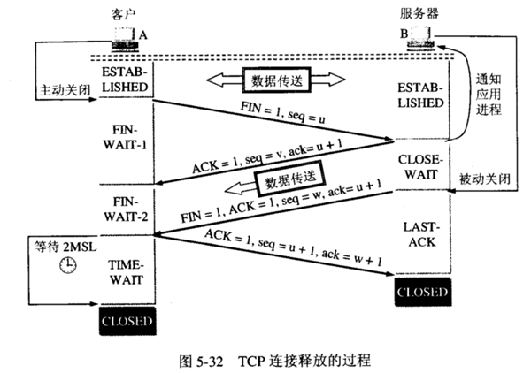

书到用时方恨少，事非经过不知难。 – 南宋·陆游
TCP/IP
一、基础
TCP，即传输控制协议(Transmission Control Protocol)是一种面向连接的、可靠的、基于字节流的传输层通信协议，由IETF的RFC 793定义。在简化的计算机网络OSI模型中，它完成第四层传输层所指定的功能。用户数据报协议(UDP)是同一层内另一个重要的传输协议。
二、TCP的首部格式
- 来源连接端口(16位长)－识别发送连接端口
- 目的连接端口(16位长)－识别接收连接端口
- 序列号(seq，32位长)
- 如果含有同步化旗标(SYN)，则此为最初的序列号；第一个数据比特的序列码为本序列号加一。
- 如果没有同步化旗标(SYN)，则此为第一个数据比特的序列码。
- 确认号(ack，32位长)—期望收到的数据的开始序列号。也即已经收到的数据的字节长度加1。
- 数据偏移(4位长)—以4字节为单位计算出的数据段开始地址的偏移值。
- 保留(3比特长)—须置0
- 标志符(9比特长)
- NS—ECN-nonce。ECN显式拥塞通知(Explicit Congestion Notification)是对TCP的扩展，定义于RFC 3540(2003)。ECN允许拥塞控制的端对端通知而避免丢包。ECN为一项可选功能，如果底层网络设施支持，则可能被启用ECN的两个端点使用。在ECN成功协商的情况下，ECN感知路由器可以在IP头中设置一个标记来代替丢弃数据包，以标明阻塞即将发生。数据包的接收端回应发送端的表示，降低其传输速率，就如同在往常中检测到包丢失那样。
- CWR—Congestion Window Reduced，定义于RFC 3168(2001)。
- ECE—ECN-Echo有两种意思，取决于SYN标志的值，定义于RFC 3168(2001)。
- URG—为1表示高优先级数据包，紧急指针字段有效。
- ACK—为1表示确认号字段有效
- PSH—为1表示是带有PUSH标志的数据，指示接收方应该尽快将这个报文段交给应用层而不用等待缓冲区装满。
- RST—为1表示出现严重差错。可能需要重新创建TCP连接。还可以用于拒绝非法的报文段和拒绝连接请求。
- SYN—为1表示这是连接请求或是连接接受请求，用于创建连接和使顺序号同步
- FIN—为1表示发送方没有数据要传输了，要求释放连接。
- 窗口(WIN，16位长)—表示从确认号开始，本报文的发送方可以接收的字节数，即接收窗口大小。用于流量控制。
- 校验和(Checksum，16位长)—对整个的TCP报文段，包括TCP头部和TCP数据，以16位字进行计算所得。这是一个强制性的字段。
- 紧急指针(16位长)—本报文段中的紧急数据的最后一个字节的序号。
- 选项和填充字段—最多40字节。每个选项的开始是1字节的kind字段，说明选项的类型。选项长度不一定是32位的整数倍，所以要加填充位，即在这个字段中加入额外的零，以保证TCP头是32的整数倍。
- 0：选项表结束(1字节)
- 1：无操作(1字节)用于选项字段之间的字边界对齐。
- 2：最大报文段长度(4字节，Maximum Segment Size，MSS)通常在创建连接而设置SYN标志的数据包中指明这个选项，指明本端所能接收的最大长度的报文段。通常将MSS设置为(MTU-40)字节，携带TCP报文段的IP数据报的长度就不会超过MTU(MTU最大长度为1518字节，最短为64字节)，从而避免本机发生IP分片。只能出现在同步报文段中，否则将被忽略。
- 3：窗口扩大因子(3字节，wscale)，取值0-14。用来把TCP的窗口的值左移的位数，使窗口值乘倍。只能出现在同步报文段中，否则将被忽略。这是因为现在的TCP接收数据缓冲区(接收窗口)的长度通常大于65535字节。
- 4：sackOK—发送端支持并同意使用SACK选项。
- 5：SACK实际工作的选项。
- 8：时间戳(10字节，TCP Timestamps Option，TSopt)
- 发送端的时间戳(Timestamp Value field，TSval，4字节)
- 时间戳回显应答(Timestamp Echo Reply field，TSecr，4字节)
- 数据部分：TCP报文段中的数据部分是可选的。在一个连接建立和一个连接终止时，双方交换的报文段仅有TCP首部。如果一方没有数据要发送，也使用没有任何数据的首部来确认收到的数据。在处理超时的许多情况中，也会发送不带任何数据的报文段。
三次握手和四次挥手
一、状态参考
1 | CLOSED:关闭状态 |
二、三次握手过程

- 第一次握手：起初两端都处于CLOSED关闭状态，Client将标志位SYN置为1，随机产生一个值seq=x，并将该数据包发送给Server，Client进入SYN-SENT状态，等待Server确认；
- 第二次握手：Server收到数据包后由标志位SYN=1得知Client请求建立连接，Server将标志位SYN和ACK都置为1，ack=x+1，随机产生一个值seq=y，并将该数据包发送给Client以确认连接请求，Server进入SYN-RCVD状态，此时操作系统为该TCP连接分配TCP缓存和变量；
- 第三次握手：Client收到确认后，检查ack是否为x+1，ACK是否为1，如果正确则将标志位ACK置为1，ack=y+1，并且此时操作系统为该TCP连接分配TCP缓存和变量，并将该数据包发送给Server，Server检查ack是否为y+1，ACK是否为1，如果正确则连接建立成功，Client和Server进入ESTABLISHED状态，完成三次握手，随后Client和Server就可以开始传输数据。
1 | ①客户机首先向服务器的TCP发送SYN=1，表示一个连接请求报文段，随机选择一个起始序号seq=x |
服务端资源是在完成第二次握手分配的，而客户端资源是在完成第三次握手分配的，使得服务器易于收到SYN洪泛攻击。
三、四次挥手过程

- 第一次挥手：从ESTABLISHED变为主动关闭状态，客户端主动发送释放连接请求给服务器端，FIN=1。发送完之后就变为FIN_WAIT_1状态，这个状态可以说是等待确认状态。
- 第二次挥手：服务器接收到客户端发来的释放连接请求后，状态变为CLOSE_WAIT，然后发送确认报文给客户端，告诉他我接收到了你的请求。为什么变为CLOSE_WAIT，原因是是客户端发送的释放连接请求，可能自己这端还有数据没有发送完呢，所以这个时候整个TCP连接的状态就变为了半关闭状态。服务器端还能发送数据，并且客户端也能接收数据，但是客户端不能在发送数据了，只能够发送确认报文。客户端接到服务器的确认报文后，就进入了FIN_WAIT_2状态。也可以说这是等待服务器释放连接状态。
- 第三次挥手：服务器端所有的数据度发送完了，认为可以关闭连接了，状态变为被动关闭，所以向客户端发送释放连接报文，发完之后自己变为LAST_WAIT状态，也就是等待客户端确认状态
- 第四次挥手：客户端接到释放连接报文后，发送一个确认报文，然后自己变为TIME_WAIT,而不是立马关闭，因为客户端发送的确认报文可能会丢失，丢失的话服务器就会重传一个FIN，也就是释放连接报文，这个时候客户端必须还没关闭。当服务器接受到确认报文后，服务器就进入CLOSE状态，也就是关闭了。但是由于上面说的这个原因，客户端必须等待一定的时间才能够进入CLOSE状态。
1 | ①客户机打算关闭连接，向TCP发送`FIN=1`标志位的连接释放报文段，并停止再发送数据，`seq=u`等于前面已传送过的数据的最后一个字节的序号加1 |
四、扩展
TCP连接管理：TCP是面向连接的协议，每一个TCP连接都会经过三个阶段：连接建立、数据传送和连接释放。TCP连接的两个端口叫做套接字或插口，连接的建立采用客户/服务器方式，即C/S模式，主动发送连接建立的应用进程叫做客户机(client)，而被动等待连接建立的应用程序叫做服务器(server)。
- 面向连接的协议(Connection-oriented Protocol)：会在通信计算机之间建立并维护一个连接，并且在通信过程中监视连接的状态。换句话说，通过网络传输的每个数据报都会有一个确认，发送计算机会记录状态信息来确保每个数据包都被正确接收了，并且根据需要重发数据。当数据传输结束之后，发送和接收计算机会以适当方式关闭连接。
重传机制，导致TCP对报文进行重传有两种情况：超时和冗余ACK
- 超时：TCP每发送一个报文段就对这个报文段设置一次计时器，只要计时器设置的重传时间到期还没有收到确认就要重传这一报文段。而重传时间的计算采用了一种自适应算法，略大于加权平均往返时间RTTs
- RTTs指的是一个报文段发出的时间到收到确认的时间之间的时间。
- 冗余ACK：超时触发重传存在的一个问题就是超时周期过长，因此发送方通常可在超时事件发生之前通过所谓的冗余ACK来较好的检测丢包情况。
- TCP规定当发送方收到对同一个报文段的3个冗余ACK时，就可以认为该报文段已经丢失。
发送方A发送了序号为1，2，3，4，5的TCP报文段，其中2号报文在链路中丢失无法到达接收方B，因此3，4，5对B来说是失序报文段。TCP规定当期望序号大的失序报文段到达时，发送一个冗余ACK，指明下一个期待字节的序号。因此，当3，4，5报文到达B，并不是B期望收到的下一个报文，于是B就发送3个1号报文段的冗余ACK，表示自己期望接收2号报文段。这时A收到3个冗余ACK就判断2号报文段已经丢失，这时发送方A可以立即对2号报文执行重传，这种技术通常称为快速重传。
- 超时：TCP每发送一个报文段就对这个报文段设置一次计时器，只要计时器设置的重传时间到期还没有收到确认就要重传这一报文段。而重传时间的计算采用了一种自适应算法，略大于加权平均往返时间RTTs
TCP报文


一、概念
TCP报文是TCP层传输的数据单元，也叫报文段。
端口号：16位，用来标识同一台计算机的不同的应用进程。
- 源端口：16位，源端口和IP地址的作用是标识报文的返回地址
- 目的端口：端口指明接收方计算机上的应用程序接口
- TCP报头中的源端口号和目的端口号与IP数据报中的源IP和目的IP唯一确定一条TCP连接
序号(sequence number)：32位，指的是本报文所发送数据的第一个字节的序号
- 因为TCP是面向字节流的，所以TCP连接中传送的数据流中每个字节都编上序号
- 如一个报文段的序号为300，此报文段数据部分共有100字节，则下一个报文段的序号为400
- 序号确保了TCP传输的有序性
确认号(acknowledgement number)：32位，期望收到对方的下一个报文段的数据的第一个字节的序号。
- 若确认号=N，则表明到序号N-1为止的所有数据都已正确收到
- 确认号只有当ACK标志位为1时才有效
- 建立连接时，SYN报文的ACK标志位为0
数据偏移：4位
- 由于首部可能含有可选项内容，因此TCP报头的长度是不确定的
- 报头不包含任何选项字段则长度为20字节，4位首部长度字段所能表示的最大值为1111，转化为10进制为15，15*32/8=60，故报头最大长度为60字节。
- 首部长度也叫数据偏移，是因为首部长度实际上指示了数据区在报文段中的起始偏移值。
保留：6位，为将来定义新的用途保留，现在一般置0。
控制位：6位，共6个，每一个标志位表示一个控制功能。
- URG：紧急指针标志，为1时表示紧急指针有效，为0则忽略紧急指针
- ACK：确认序号标志，为1时表示确认号有效，为0表示报文中不含确认信息，忽略确认号字段
- PSH：push标志，为1表示是带有push标志的数据，指示接收方在接收到该报文段以后应尽快将这个报文段交给应用程序，而不是在缓冲区排队
- RST：重置连接标志，用于重置由于主机崩溃或其他原因而出现错误的连接，或者用于拒绝非法的报文段和拒绝连接请求
- SYN：同步序号，当本字段为1时，表示这是一个连接请求或者连接接受报文
- FIN：finish标志，用于释放连接，为1时表示发送方已经没有数据发送了，即关闭本方数据流
窗口：16位，滑动窗口大小，用来告知发送端接受端的缓存大小，以此控制发送端发送数据的速率，从而达到流量控制。
- 窗口大小是一个16位字段，因而窗口大小最大为65535
校验和：16位，奇偶校验，此校验和是对整个TCP报文段，包括 TCP头部和TCP数据，以16位进行计算所得。
- 由发送端计算和存储，并由接收端进行验证
紧急指针：16位，只有当URG标志置1时紧急指针才有效。
- 紧急指针是一个正的偏移量，与序号字段中的值相加表示紧急数据最后一个字节的序号
- TCP的紧急方式是发送端向另一端发送紧急数据的一种方式
20B = 端口号4B + 序号4B + 确认号4B + (数据偏移4bit+保留6bit+控制位6bit)/8 + 窗口2B + 校验和2B + 紧急指针2B
选项和填充：32位，最常见的可选字段是最长报文大小MSS(Maximum Segment Size)，每个连接方通常都在通信的第一个报文段(为建立连接而设置SYN标志为1的那个段)中指明这个选项，它表示本端所能接受的最大报文段的长度。
- 选项长度不一定是32位的整数倍，所以要加填充位，即在这个字段中加入额外的零，以保证TCP头是32的整数倍
数据部分：数据部分是可选的。
- 在建立和终止连接时，双方交换的报文段仅有TCP首部
- 如果一方没有数据要发送，也使用没有任何数据的首部来确认收到的数据
- 在处理超时的许多情况中，也会发送不带任何数据的报文段
二、参考
流量控制和拥塞控制
一、流量控制
- 接收端处理数据的速度是有限的，如果发送方的速度太快就会把缓冲区u打满。这个时候如果继续发送数据，就会导致丢包等一系列连锁反应。所以TCP支持根据接收端能力来决定发送端的发送速度，这个机制叫做流量控制。
- 流量控制就是让发送方的发送速率不要太快，要让接收方来得及接收
- 也就是说流量控制是一个速度匹配服务，匹配发送方的发送速率和接收方的接收速率
- TCP使用滑动窗口机制来实现流量控制，其原理是：在通信过程中，接收方根据自己接收缓存的大小，动态调整发送方的发送窗口大小(即TCP报文段首部中的窗口字段swnd(send window))来限制发送方向网络注入报文的速率。
【同时，发送方根据其对当前网络拥塞程序的估计确定一个拥塞窗口cwnd(congestion window)，最终A发送的窗口的实际大小是min(swnd,cwnd)值。】这段属拥塞控制- 接收方每次收到数据包，在发送确定报文的同时告诉发送方自己的缓存区还剩余多少是空闲的，把接收方缓存区的剩余大小称之为接收窗口大小，用变量rwnd来表示
- 接收端将自己可以接收的缓冲区大小放入TCP首部中的窗口字段，通过ACK端通知发送端；窗口大小字段越大，说明网络的吞吐量越高
- 接收端一旦发现自己的缓冲区快满了，就会将窗口大小设置成一个更小的值通知给发送端；发送端接受到这个窗口之后，就会减慢自己的发送速度
- 如果接收端缓冲区满了就会将rwnd置为0，这时发送端不再发送数据
- rwnd为0时发送端停止发送报文，并且同时开启一个定时器，每隔一段时间就发个窗口探测数据段去询问接收方否可以继续发送数据了
- 如果接受窗口大小不为0，接收方就告诉发送方此时接受窗口的大小
- 如果接受窗口大小为0，则发送方再次刷新启动定时器，重复上述步骤


二、拥塞控制
拥塞控制就是防止过多的数据注入到网络，这样使网络中的链路或路由器不至于过载。
发送方维持一个拥塞窗口cwnd的状态变量，它的大小取决于网络的拥塞程度，并且在动态的变化，发送方会让自己的发送窗口等于这个拥塞窗口。
发送方控制拥塞窗口的原则是：
- 只要网络没有出现拥塞，拥塞窗口就再增大一些，以便把更多的分组发送出去
- 但只要网络出现拥塞，拥塞窗口就减小一些，以减少注入到网络中的分组数
拥塞控制的四种方法
- 慢开始：在TCP刚连接好开始发送TCP报文段时，先令拥塞窗口cwnd=1，每经过一个传输轮次(即往返RTT)，拥塞窗口cwnd就会加倍，呈指数形式增加。当慢开始算法把拥塞窗口cwnd增大到一个阈值ssthresh，改用拥塞避免算法。
- 拥塞避免：发送端的拥塞窗口cwnd每经过一个往返RTT，cwnd=cwnd+1。
只要发送方判断出网络拥塞，不论是在慢开始还是拥塞控制阶段，都要把慢开始门限值设置为出现拥塞时发送端窗口大小的一半，但不能小于2。然后把cwnd重新置为1，执行慢开始算法。这么做的目的是减少发送到网络中的分组数，使得发生拥塞的路由器能够有时间能把队列中积压的分组处理掉。
发送端判断网络拥塞的依据： ①传送超时，即TCP重传定时器溢出 ②收到重复的确认报文
- 快重传：要求接收方每收到一个失序的报文段后就立即发出重复确认，而不要等到自己发送数据时才进行捎带确认。发送方只要一连收到3个同样的确认报文就应当立即重传数据报，不必等待报文段的重传计时器到期。
- 快恢复：当发送端收到连续三个冗余ACK时，就执行【乘法减少】算法，把慢开始阈值ssthresh设置为出现拥塞时发送方cwnd的一半。与慢开始将拥塞窗口cwnd设置为1的不同之处，它把cwnd的值设置为慢开始阈值ssthresh减半后的数值，然后执行拥塞避免算法，【加法增大】，使拥塞窗口缓慢线性增大。

三、重传控制
- 超时重传
- 重传超时：发送方在报文发出去后就启动一个计时器，在时限内对方回复ACK计时器就清零，超过实现则出发超时重传
- 重传类型
- 发送包途中丢失
- 确认包途中丢失
- 快速重传
TCP协议的计时器
- 重传计时器
- 持续计时器
- 保活计时器
- 时间等待计时器
封包拆包粘包
一、封包
- 定义：给一段数据加上包头或者包尾。
二、拆包
三、粘包
- 定义：多个独立的数据包连到一块儿。